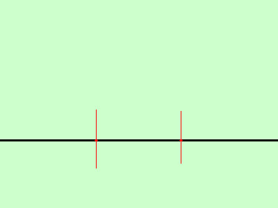
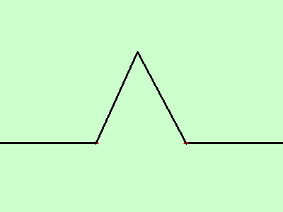
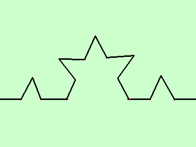
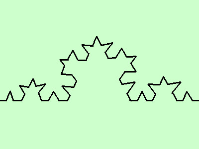

|
sviluppo tracciare il grafico della seguente funzione  Curva di Von Koch e' una curva continua e non derivabile in ogni suo punto punto (l'antenata dei frattali)  Per la sua costruzione consideriamo un segmento nel piano e dividiamolo in 3 parti uguali, sul segmento centrale costruiamo un triangolo equilatero ed eliminiamo la base  Ripetiamo la costruzione in modo da suddividere ogni segmento ulteriormente in 3 parti uguali e ripetiamo la costruzione dei triangolo equilatero nel segmento centrale eliminando le basi  continuando a suddividere i segmenti e a costruire triangoli equilateri senza base otterremo la nostra curva |